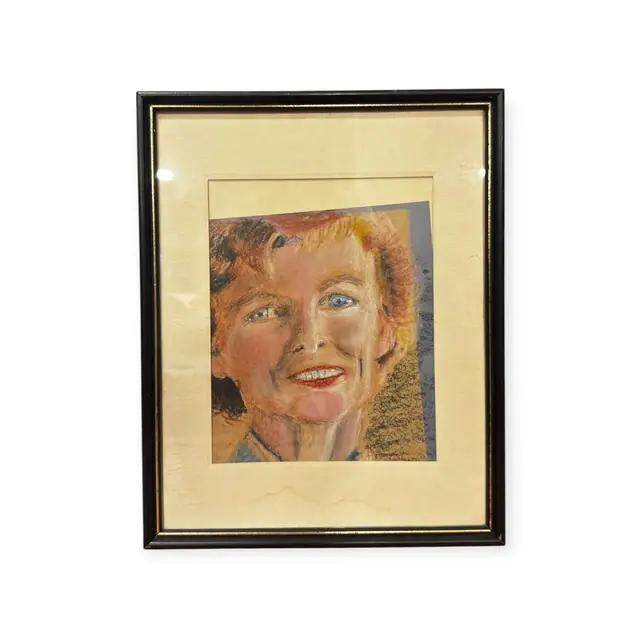
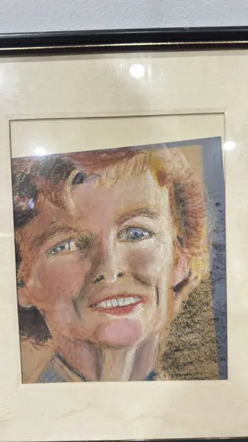

Paintings & Prints
Pastel Portrait of a Smiling Auburn-Haired Woman, Framed
· mid to late 20th century
Price Upon Request


About the Item
A vigorous pastel head study of a woman with short auburn hair, blue eyes and a broad open smile, worked on toned paper. Flesh is built from strokes of terracotta, cream and rose left frankly visible, with cool blue-grey in the shadows of the neck and collar. The background is divided between a slate-blue panel at left and a scumbled ochre passage at right, both left deliberately unfinished. The touch is quick and confident, the whole thing more sketch than formal portrait. Medium: pastel on toned paper. Condition: Slight toning of the mat; heavy glare on the glass in every shot. No visible tears or losses.
Details
- Creation Year:
- mid to late 20th century
- Dimensions:
- Height: 15.0 in (38.1 cm)
Width: 12.0 in (30.48 cm)
outside of frame - Medium:
- pastel on toned paper
- Period:
- 20Th
- Condition:
- Offered in the condition shown in the photographs.
- Reference Number:
- VO-203
- Documentation:
- no certificate present